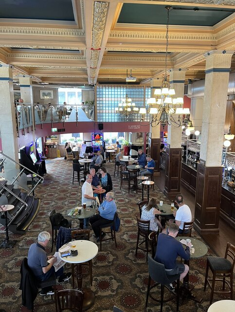
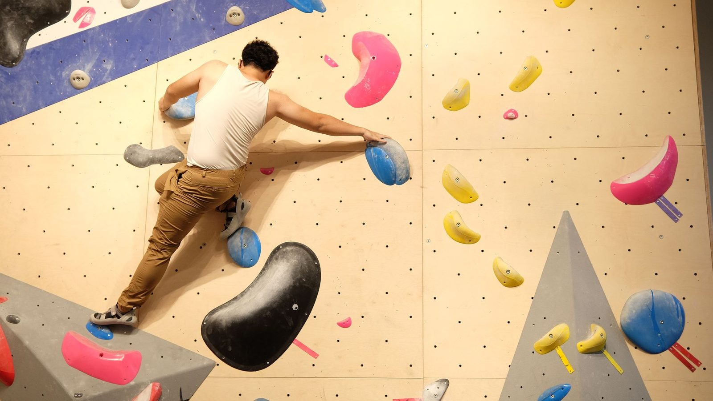
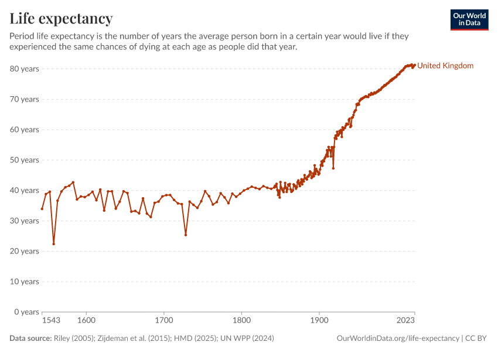

Component 1 is due on Friday 30 October. After today there are two more sessions before then.
So we start with what you hand in and where you should be by now. Then you check your idea against the brief, break it into beats, and after the break you look at what else you can put on a page besides text and photos, and build a video section of your own.
Session at a glance
- Where you should be by now
- Last week's task, in two minutes
- Activity 1: five new pieces, in pairs
- Activity 2: check your idea against the brief
- Beats: breaking a piece into steps
- Activity 3: create your beat sheet
Break
Also on this page: If you get stuck · Resources
What to have with you
Your ideas sheet from last week, paper and a pen, and your laptop. Print the beat sheet if you can (one landscape A4 sheet); plain paper works too.
Part one
Where you should be by now
Be honest with yourself about this list. I am not marking it, but if you are behind, today is the cheapest day to catch up.
| By | You should have |
|---|---|
| The start of today | An idea you want to make, or two you cannot choose between. Your page from last week committed and synced: the picture chapter and the scene that holds still. |
| The end of today | Your idea in one sentence, checked against the brief. A list of beats for the whole piece. A full-screen video on your page, committed. |
| Next session | Five sources written down properly. About one picture, clip or chart for each beat. Three key influences. Your beat sheet redone with what you found out. |
| The session after | A storyboard and a moodboard. Everything else drafted, ready to put into the PDF. |
| Friday 30 October, 12 noon | The PDF and your AI-use log, uploaded to MyBeckett. |
Part two
Last week's task, in two minutes
Last week's task had two jobs. The first was to read the watch-list and write a few lines on each piece: what it did as you scrolled, whether you could do anything except scroll, and one thing you would steal. The second was to test your five favourite ideas and come back with your best three.
If you did both, you are ahead. If you did not, Activity 1 is a short version of the first job and Activity 2 is the second. The watch-list is still worth reading this week, because those notes become your key influences, one of the six things you hand in.
Activity 1 · 20 minutes · in pairs
Five new pieces
Last week's pieces were mostly photographs and charts. These five are made of other things: video, drawings, 3D. I will give each pair one. Ten minutes to read it properly, then each pair has a minute to tell the room three things:
- What it is made of. Photos, video, drawings, charts, maps, 3D, or a mix.
- How many times the page changes as you scroll to the end. Roughly is fine.
- One thing you would steal.
-
The Library of Lost Maps
Opens on a full-screen video of a map room, with the text sitting on top. You build that this afternoon.
-
The road was long
One woman's account of leaving Kharkiv, told with drawings instead of photographs. Notice why drawings suit this story.
-
The Physical Phenomenon
Why Kpop fans still buy CDs. An explainer that mixes drawings, real posts and an interactive chart.
-
Women's Pockets are Inferior
Eighty pairs of jeans, measured and drawn. A small, everyday subject made into a strong explainer.
-
AirPods Pro
You saw this in Week 1. Look again at what it is made of: the earbuds are 3D models, rendered and played back as video clips.
Write a line about yours in your notes under the heading Key influences, and a line about anything somebody else says that you wish you had noticed.
Activity 2 · 15 minutes · in pairs
Check your idea against the brief
Tell your partner your idea in a sentence. They ask you these five questions and you write the answers down, a line each.
- Is it a story or an explainer? A story is something that changed over time. An explainer shows how something works, step by step. The brief allows either.
- What does scrolling down mean in your piece? Later in time, further along a journey, one more step in a process, deeper into a place. If you could shuffle your sections into any order and lose nothing, you have an article, and the brief asks for more than that.
- Can you get the pictures? Name three photos, clips, drawings or datasets you have actually seen and could use. If you cannot yet, Part four after the break lists where to look.
- Can you check it? Name one source for your main fact that is not Wikipedia, a forum or your memory.
- Where could the reader do something other than scroll? Drag a slider, tap to guess, choose a route. The brief asks for at least one moment like this. Rough is fine.
If you cannot answer two of these, come and see me during Activity 3. Usually the fix is to make the idea smaller: one building instead of the high street, one glacier instead of climate change.
Then write this at the top of your notes and fill in the gaps:
Your idea in one sentence
“My piece is about [what], for [who]. By the end, they will understand or feel [what].”
That sentence is the start of audience and intent in your Component 1 PDF.
If your story involves real people
A family member, a friend, something that happened to you: that is welcome, but talk to me before you commit. They need to agree to it, and they cannot easily take it back once it is published.
Part three
Beats: breaking a piece into steps
A beat
One moment where something on the page changes as the reader scrolls. A picture appears. A caption arrives. A photo swaps for a newer one. A number counts up. Your whole piece is a list of these, in order.
A beat is not a page or a screen. One photo that stays put while three captions pass over it, the scene you built last week, is three beats: each caption changes what the reader knows.
Breaking a story into beats
- Start with something to look at, and a question the reader wants answered. What happened here? How did it get like this?
- One change per beat, in time order.
- Slow down at the big moment. More beats, and more scrolling between them, tell the reader this part matters.
- End where things are now, and why it matters.
Breaking an explainer into beats
- Start with something the reader already knows or has seen.
- One new idea per beat. Each one should need the one before it.
- Show it first, then explain it.
- Near the end, let the reader try it. That is often your moment of interaction.
Two worked examples, both from last week's idea prompts. The columns are the same three you fill in today.

There is a real one a short walk from City Campus. Becketts Bank on Park Row was built in the 1920s as a branch of the Bank of Liverpool and Martins and is now a pub. The table below is invented, so its dates are not this building's, but these are the pictures its beats would need: outside for the first and last, inside for the banking hall then and now.
| # | What the reader sees | What they now know | What changed |
|---|---|---|---|
| 1 | Full-screen photo of the bar on a Friday night. One line: “This was a bank for 120 years.” | Where we are, and that it used to be something else. | Nothing. It is there when they arrive. |
| 2 | The same corner in an archive photo, 1905. | It was built as a bank. | The photo swapped. |
| 3 | A 1950s photo of a queue outside. A short paragraph. | It was the busiest building on the street. | Photo and text arrived. |
| 4 | A chart of bank branches closing across the country. | It is not only this one. | The chart drew itself. |
| 5 | The closing notice taped in the window. | When, and what customers were told. | A new photo arrived. |
| 6 | Ten seconds of video inside, during the refit. | What happened to the inside. | The video started. |
| 7 | The banking hall then and now, with a handle to drag between them. | The same room, and how different it is. | Nothing, until the reader drags it. |
| 8 | Back outside, today. One line. | What the street lost, and what it gained. | The last photo arrived. |

| # | What the reader sees | What they now know | What changed |
|---|---|---|---|
| 1 | Video: a beginner stuck on the wall, arms shaking. One line: “Most beginners climb with their arms.” | The problem. | Nothing. It is there when they arrive. |
| 2 | A drawing of a climber with arrows showing where the weight goes. | Legs are stronger than arms. | The drawing arrived. |
| 3 | A photo of a foot on a hold, held still. Caption: “Use your toe, not your arch.” | The first rule. | The photo held, the caption arrived. |
| 4 | Same photo. Caption: “Watch your foot onto the hold.” | The second rule. | A new caption. |
| 5 | Same photo. Caption: “Push with your legs, then reach.” | The third rule. | A new caption. |
| 6 | Video: the same beginner tries again, legs doing the work. | It works. | The video started. |
| 7 | A photo of a wall. The reader taps where they would put their foot next, and the page shows the move. | Whether they have understood it. | Nothing, until the reader taps. |
| 8 | One line: “Next time, look at your feet.” | What to do at the wall. | Text arrived. |
Read the middle column of either table on its own, top to bottom. It tells the whole piece. That is the test for yours.
Activity 3 · 30 minutes · on your own, then in threes
Create your beat sheet
On the beat sheet, or on paper with the same columns. The filled-in example shows the bank story from the table above, written on the sheet. Fill in the first three columns only. Leave the last two blank for now.
- Write your first beat and your last beat first: what the reader sees at the top, and what they know at the end.
- Fill in the middle, one change per row. Eight to fourteen beats is usual for a piece this size. Fewer than six is too thin to scroll through.
- In “What the reader sees”, say what kind of thing it is: photo, archive photo, video, drawing, chart, map, 3D.
- Read the “What they now know” column out loud, top to bottom. If it does not tell your story, move or cut rows until it does.
- Circle the row where the reader could do something.
- In threes, read each other's. Ask one question about each row: “why is this one after that one?”
The most common fix
Most first lists start a beat or two too early, with background the reader does not need yet. Try deleting your first row and see if anything is lost.
Part four
What can I put on my page?
Look at the “What the reader sees” column you just wrote. Every row needs something to show, and you have more options than photos and text.
| Kind | Where it comes from | Watch for |
|---|---|---|
| Your own photos | Your phone. Take far more than you need. | The safest option: you own them. Ask people before you photograph them close up. |
| Archive photos and maps | The archives listed below. | Check the licence on every picture, and credit every one. |
| Video | Film it yourself: 5 to 15 seconds, phone held still. Or archive film that is out of copyright. | Keep each clip short and under about 10 MB. Old film is not always free to use: check. |
| Drawings | Draw on paper and photograph it, or use Procreate, Illustrator or Figma and export SVG. | Slower than you think. Plan a few strong drawings, not one per beat. |
| Charts and maps | Our World in Data, or numbers from your sources drawn in Figma. | A chart is only as good as the source of its numbers. |
| 3D | Model it in Blender and render a still or a short clip. Or build it in Spline, which runs live in the browser so the reader can turn it. Ready-made models from Smithsonian 3D or Sketchfab. | Rendering to an image or video is the safe route: it works everywhere. Live 3D is slow to load on phones, and Spline's free plan puts a watermark on web exports. One 3D moment, not a whole piece. Talk to me before you commit to it. |

Every one of these goes in the Sources and credits list at the bottom of your page: what it is, who made it, and under what licence. Section 9 of the brief covers copyright, and the research methods tutorial shows how to credit images you did not take.
Places to look
-
World of Change
Around thirty places photographed for decades: glaciers, lakes, cities. Made for change-over-time pieces.
-
Side-by-side maps
Old Ordnance Survey maps beside a modern map of the same spot. Try your own street.
-
Aerial Photo Explorer
Hundreds of thousands of aerial photographs of England, searchable by place and year.
-
Leodis
A photographic archive of Leeds, street by street.
-
Our World in Data
Thousands of sourced charts. Start here if your change is a number.
-
Smithsonian 3D
Scanned objects, fossils and aircraft you can view and, for many, download.
-
Spline Community
Ready-made 3D scenes you can open, change and learn from.
Part five
A full-screen video
A video filling the screen with a few words on top is one of the most common beats there is. The Library of Lost Maps opens with one. You are going to build one, and the same code works for a full-screen photo.
The HTML. Add it after your scene from last week:
index.html
<section class="chapter-full">
<video src="images/iss-night-lights.mp4"
poster="images/iss-night-lights.jpg"
autoplay muted loop playsinline controls></video>
<div class="chapter-full-text">
<h2>Your heading</h2>
<p>One or two sentences.</p>
</div>
</section>
<video> is new. Its attributes each do one job:
| Attribute | What it does |
|---|---|
src |
The video file. |
poster |
A picture shown before the video loads, and instead of it if it never does. |
autoplay |
Starts playing by itself. |
muted |
No sound. Browsers only autoplay video that is muted, so without this, autoplay does nothing. |
loop |
Starts again when it ends. |
playsinline |
Plays in the page. Without it, an iPhone jumps to full screen. |
controls |
The play and pause bar. Anything that moves by itself for more than five seconds needs a way to stop it. That is an accessibility rule (WCAG 2.2.2), so leave this on. |
Then the CSS, under YOUR STYLES:
css/style.css
.chapter-full {
position: relative; /* the text is placed inside this box */
height: 100svh; /* one full screen, like your cover */
}
.chapter-full video,
.chapter-full img {
display: block;
width: 100%;
height: 100%;
object-fit: cover; /* fill the box, crop the edges, never stretch */
}
.chapter-full-text {
position: absolute; /* sits on top of the video */
bottom: 4rem; /* clear of the video's controls */
left: 2rem;
right: 2rem;
max-width: 26rem;
padding: 1rem 1.5rem;
background: var(--paper); /* or the words vanish into the picture */
}
Two lines are doing the work. object-fit: cover makes the
video fill its box whatever shape the screen is, cropping the edges
rather than squashing the picture.
position: absolute lifts the text out of the normal flow
of the page and places it on top of the video, measured from the edges
of the nearest box with position: relative. Here that is
bottom: 4rem, which keeps it just above the video's
controls.
Task · 40 minutes · on your own page
Put a full-screen video on your page
If you do not have a clip of your own yet, use this one: ten seconds
of city lights at night, filmed from the International Space Station
in 2019. NASA footage is not under copyright, so you can use it with
a credit. Download both files and put them in your
images folder.
- iss-night-lights.mp4 (the video, 1.5 MB)
- iss-night-lights.jpg (its first frame, used as the poster)

-
Put both files in
images. Lower case, no spaces. - Add the HTML and save. The video plays, but small and with a gap round it.
- Add the CSS and save. It fills the screen. Type it, do not paste it.
-
Change
covertocontain. Save and look. Change it back. -
Drag your window down to phone width. The sides of the video are
cropped off. If the important part goes off screen, add
object-position: 30% 50%;to the video rule and change the first number until it stays in view. - Write your own heading and sentence over it.
-
Make a second section the same way with a photo: copy the section,
and replace the
<video>with an<img>with a realalt. The same CSS works. - Add both to Sources and credits in your footer. For the sample clip: “From England to India at Night, ISS Expedition 60, 2019. Video courtesy of the Earth Science and Remote Sensing Unit, NASA Johnson Space Center.”
Commit with the message “video section”, then sync. Open your live address and check the video plays there too.
Using your own clip
Film 5 to 15 seconds with the phone held still. On an iPhone, Settings → Camera → Formats → Most Compatible records video that plays in every browser. If a clip is bigger than about 10 MB, run it through HandBrake (free, Mac and Windows) with the Fast 1080p30 preset, and remove the audio track if you do not need it. GitHub refuses any file over 100 MB.
Before the next session
Research, pictures and influences
- Your idea in one sentence, at the top of your notes.
- Five sources for your facts, each written down with who, what, when and where you found it. Parts 1 and 2 of the research methods tutorial show you how.
- About one picture, clip or chart per beat that you are allowed to use, with where each came from. Rough is fine.
- Three key influences: pieces from today or the watch-list, with a line on what you are taking from each.
- Your beat sheet, redone once you know more.
- Figma working. Sign in at figma.com/education and check your free education plan is active.
- Your page, with the video section, committed and synced.
If your idea falls apart this week because the pictures do not exist or the story turns out not to be true, email me straight away. Changing now costs you nothing.
If you get stuck
I still do not have an idea
Go back to the “From your own life” prompts on last week's sheet and answer five with the most ordinary things you know: your street, your job, the bus you catch. Show the list to somebody and see which one they ask about. Then come and see me.
Someone has already made my piece
Good: it means the story works and the material exists. Write down three things you would do differently, and put their piece in your key influences.
The video does not play
Check the file is in images and the name in
src matches exactly, including capitals. Check
muted is there, or autoplay will not start. If it plays
in Safari but not in Chrome or on Windows, it is probably an iPhone
HEVC file: convert it with HandBrake.
The video does not fill the screen
Check the section has height: 100svh and the video has
height: 100% and object-fit: cover. Check
the class names in the HTML and CSS match.
Sync fails after adding the video
The file is probably too big. Make it smaller with HandBrake, replace it, commit again and sync.
Something else
Ask in the studio. Out of hours, email a.m.pearson@leedsbeckett.ac.uk with a screenshot and your live address. I normally reply within two working days.
Resources
-
Research methods for Component 1
Sources, checking facts, image rights, and keeping a record that still makes sense in January.
-
The video element
Every attribute, with examples.
-
object-fit
Cover, contain and the rest, side by side.
-
Making Internet Things: Storytelling
How a studio that does this for a living decides on audience, scope and structure.
-
The Pudding Cup
The year's best visual stories. Notice how many are small and local.